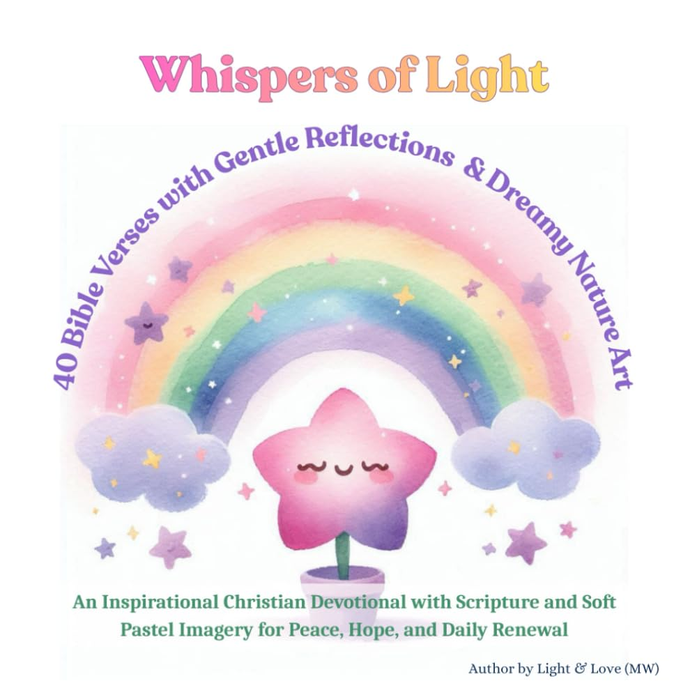

Whispers of Light: 40 Bible Verses with Gentle Reflections and Dreamy Nature Art: An Inspirational Christian Devotional with Scripture and Soft Pastel Imagery for Peace, Hope, and Daily Renewal
by Light & Love (MW) · Christian books, devotionals & inspirational gifts

A gentle devotional journey through scripture, stars, and soft skies. Whispers of Light is a Christian art devotional that pairs 40 carefully selected Bible verses with gentle, contemplative reflections . Each page is adorned with dreamy illustrations —pastel rainbows, smiling stars, glowing moons, and tranquil landscapes—inviting readers into a space of peace, hope, and divine presence. Perfect for quiet time…
Paperback · 85 pages · ISBN 979-8242689312